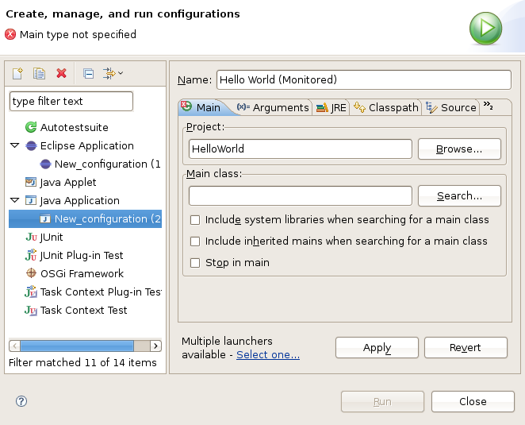
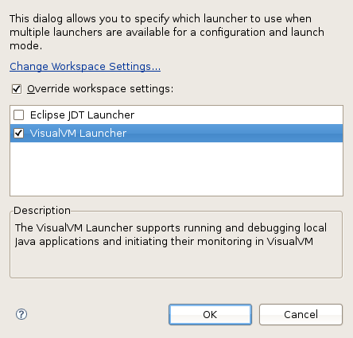

Eclipse launcher for VisualVM
A basic integration of VisualVM into Eclipse IDE
Installation
Get visualm-launcher.zip and unpack it
to your Eclipse installation folder.
Usage
There is a new launcher named "VisualVM Launcher" registered in Eclipse. You can assign this launcher to an application's Run Configuration to have the VisualVM started and connected in monitoring mode right after the application has been started.
Using the launcher:
-
Create a new application configuration
 -
Choose the "VisualVM Launcher" as the application launcher
 - Run/Debug the application with the created configuration to have VisualVM started automatically
Configuration
- Go to Run/Debug-Launching-VisualVM Configuration preferences section

Here you can modify:
- JDK Home to be used by VisualVM
- The path to VisualVM executable